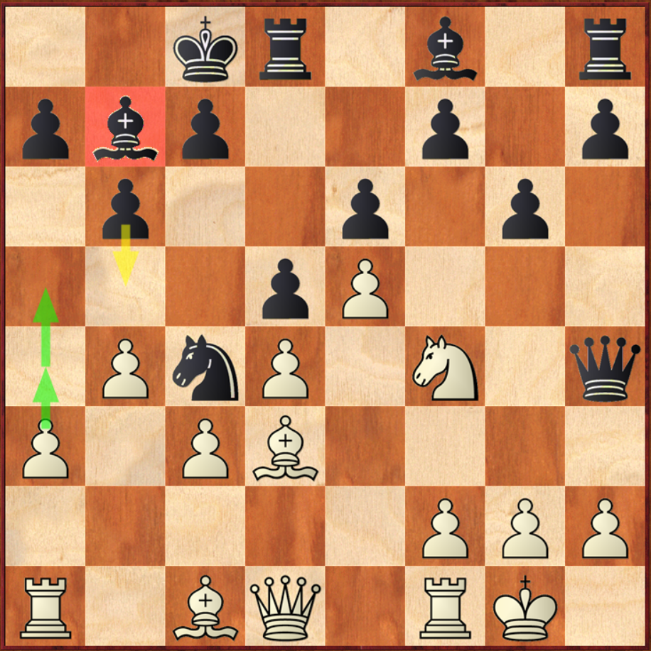
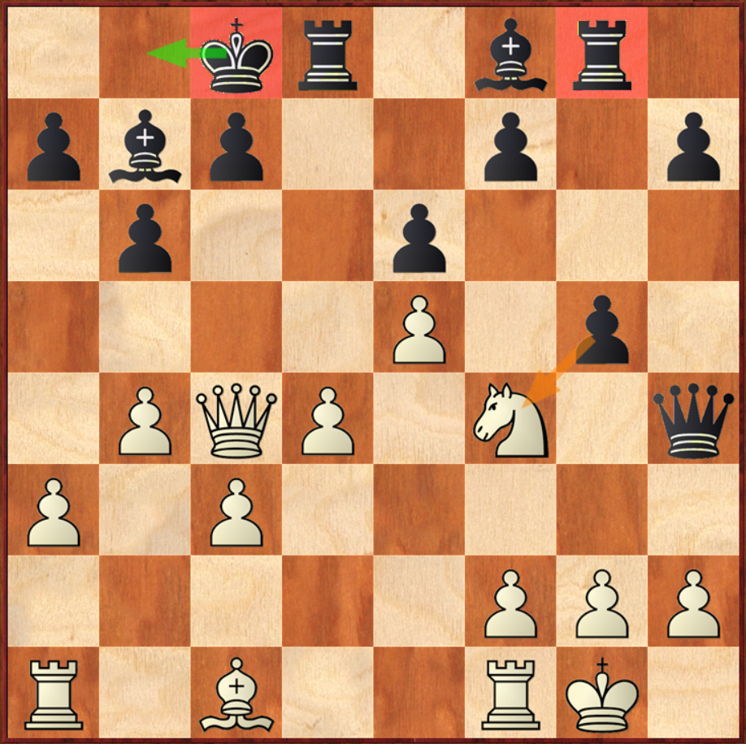
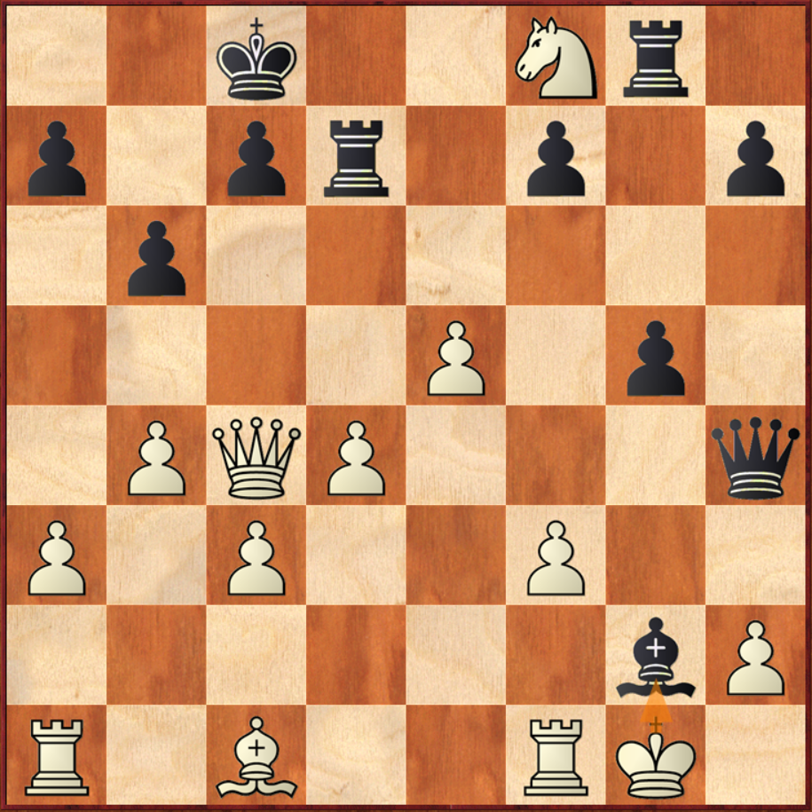

这是法兰西防御里一个比较偏僻的变招，大多数黑方在后翼马出动之前先冲c5反击白方中心。
4.e5 Nge7黑方此时也可以选择4...f6
5.Nf3 b6 6.a3 Bb7 7.Bd3 Nf5另外一个变化7...Qd7 8.0-0 h6 9.b4 0-0 10.Ne2 f6 11.Bb2 f5 12.Nd2 g5 13.Nb3 Ng6 14.b5 Nce7 15.a4 Kb8 16.a5，双方异相移位互相攻王，白方速度快，白方局面稍优。
8.Ne2这时白方也可以选择Bf5交换掉黑方马破坏黑方的兵行，但我当时更想留下白格象以后进攻黑方后翼。
8...Nh48...h6 9.0-0 Be7 10.b4 Qd7 11.c3，准备a4-a5白方进攻速度快。
9.Nxh4 Qxh4 10.0-0 0-0-0 11.c3 Na5一个好的想法，黑方准备白方如果冲b4进攻黑方后翼的话就走Nc4，如果白方交换马正好打开自己白格象的线路。
12.Nf4准备在黑方冲兵g5的时候，马通过h5格走到f6延缓黑方进攻的速度。
12...g6 13.b4 Nc4  14.Qe2?!我这步棋是准备吃掉这个马和d5兵，但是更好的是直接冲兵a4再a5，打开a线或者逼迫黑方b5，这样的话黑方的白格象就很难再出来了，全部被自己的兵给挡住了。
14...Rg8黑方并不怕白方的吃兵的计划，先把车出来以后冲g5兵，这是也可以先14...Kb8让自己的王先走到安全的区域。
15.Bxc4这里还是应该冲a兵封锁黑方的象，吃了这个兵因为打开了黑方的象的线路，所以黑方有比较足够的补偿。
15...dxc4 16.Qxc4 g5?  17.Nxe6！ Rd717...fxe6 18.Qxe6+ Kb8 19.Qxg8白方多子
18.Nxf8 Bxg2? 黑方误以为此时白方只能吃象然后长将和棋，19.Kxg2 Qg4+ 20.Kh1 Qf3+ 21.Kg1 Qg4+；如果这时吃车也不行，19.Nxd7 Bf3 20.Nf6 Qh3绝杀无解，但是黑方漏算了白方的下一步棋。
19.f3!!封锁黑方象防守的h1-a8斜线，并且消除掉黑方的将杀威胁，如果这时黑方走19...Bf1 20.Qc6 Kb8 21.Nd7白胜。如果先吃掉马19...Rf8 20.Kg2白方多子。1-0